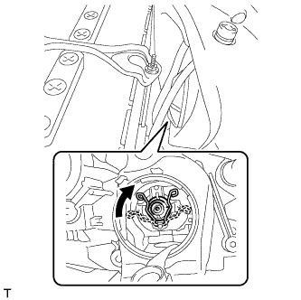

ГАЗОРАЗРЯДНЫЕ ЛАМПЫ ФАР > УСТАНОВКА |
| 1. УСТАНОВИТЕ ГАЗОРАЗРЯДНУЮ ЛАМПУ ФАРЫ |
|  |
Зафиксируйте установочную пружину, чтобы установить газоразрядную лампу фары, как показано на рисунке.
Поверните разъем ЭБУ управления освещением в направлении, указанном стрелкой, чтобы подсоединить его.
| 2. УСТАНОВИТЕ ЗАДНЮЮ КРЫШКУ ФАРЫ № 1 |
Поверните заднюю крышку в направлении, указанном стрелкой, чтобы установить ее.
| 3. ПОДСОЕДИНИТЕ ПРОВОД К ОТРИЦАТЕЛЬНОМУ ВЫВОДУ АККУМУЛЯТОРНОЙ БАТАРЕИ |